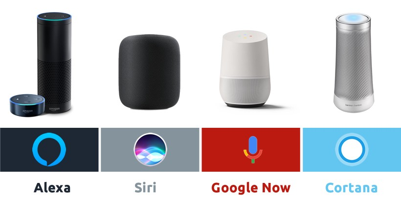

2016
Web 4.0 esta web está ligada a la inteligencia artificial donde se crean los asistentes de voz. Propone un nuevo modelo de interacción con el usuario, completo y personalizado. Nuevas tecnologías que facilitan búsquedas y las personaliza.
2018
Incorporan Wifi en el servicio de los camiones.
2019

Se crea la Web 5.0 es la red sensorial - emotiva. Se incorporan las interacciones para crear experiencias que emocionan a los usuarios. Se desarrollan aplicaciones que sienten e interactúan con los usuarios de forma sensorial.